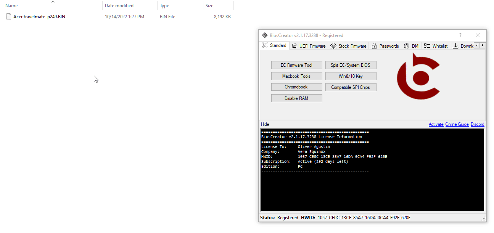

<style>
    .center {
        display: block;
        margin-left: auto;
        margin-right: auto;
        width: 50%;
      }

    a {
      text-decoration: none;
      display: inline-block;
      padding: 8px 16px;
    }
    
    a:hover {
      background-color: #ddd;
      color: black;
    }
    
    .previous {
      background-color: #f1f1f1;
      color: black;
    }
    
    .next {
      background-color: #160042;
      color: white;
    }
    </style>

<section class="support section bg-gray">
	<div class="container">
    <div class="container" style="text-align:justify; margin-bottom:50px;">
      <h4 class="join">How to Clear NVRAM of Intel UEFI Firmware?</h4>
      <p>Go to <b>"UEFI Firmware -> Clear NVRAM"</b></p>
      <br>

      <h2><b>Laptop Issues that can be fixed</b></h2>
      <li>Hang to logo</li>
      <li>Hang to Power-On Self-Test</li>
      <li>Hang to OS</li>
      <li>BIOS Password</li>
      <li>Slow performance</li>
      <br>

      <h2><b>Example</b></h2>
      <p>Clearing the NVRAM data of Acer P249-G2-MG.</p>
      

      <a href="{{ site.baseurl }}/faq/repair-fd" class="previous">&laquo; Previous</a>
    <a href="{{ site.baseurl }}/faq/repair-bios" class="next">Next &raquo;</a>

		</div> <!-- End row -->
	</div> <!-- End container -->
</section> <!-- End section -->